Usinage, assemblage, contrôle et emballage sous un même toit : les pièces passent de la matière brute à l’envoi contrôlé et emballé sans quitter le site.
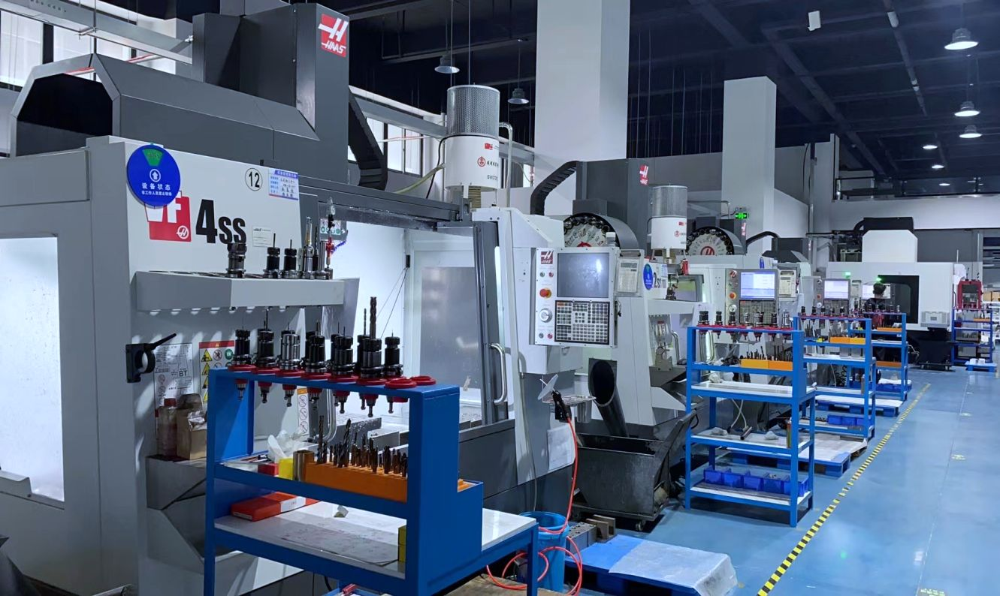
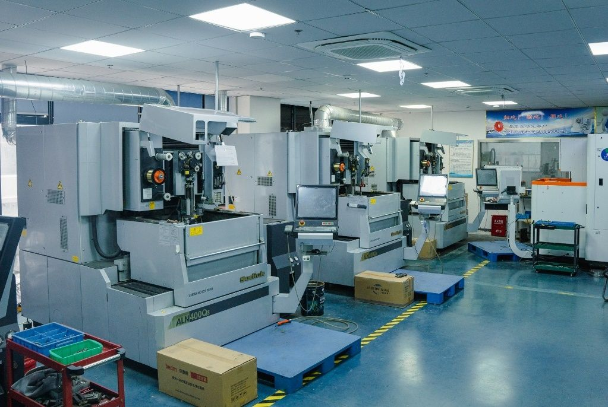
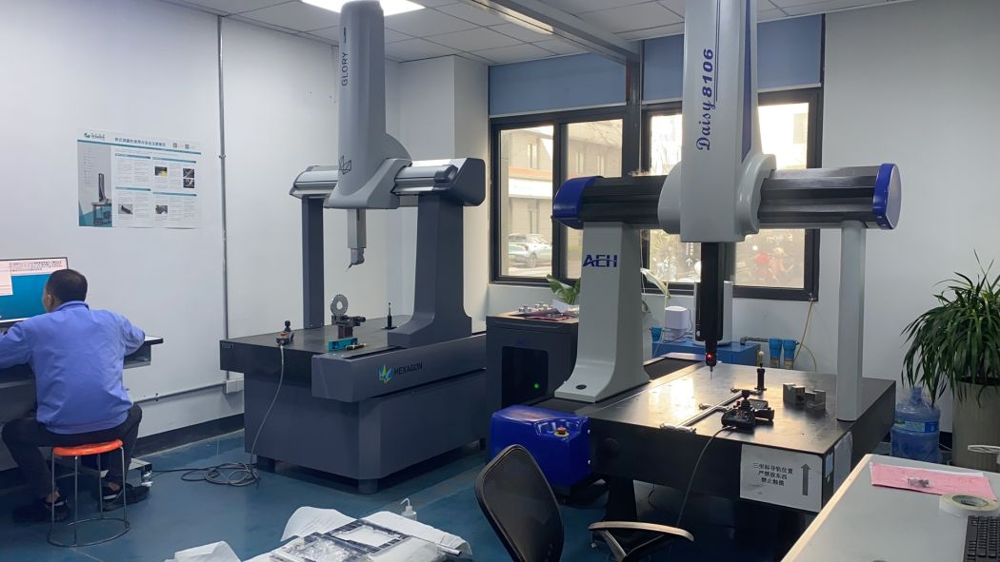
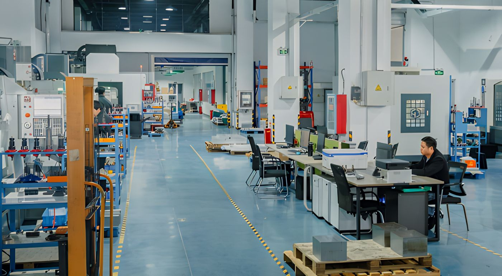
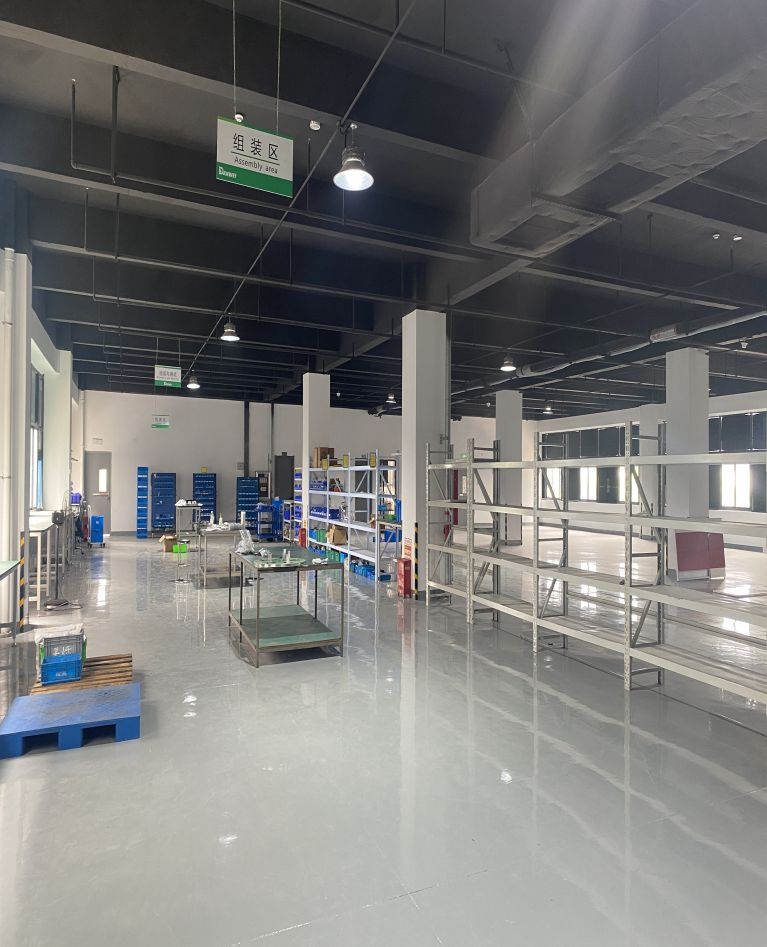
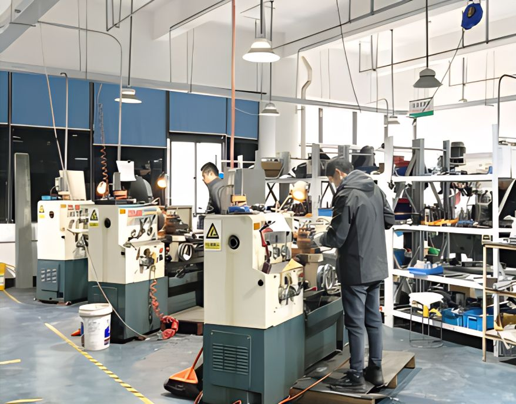
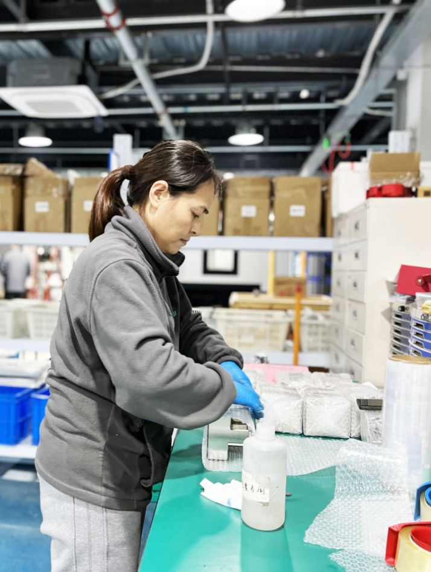
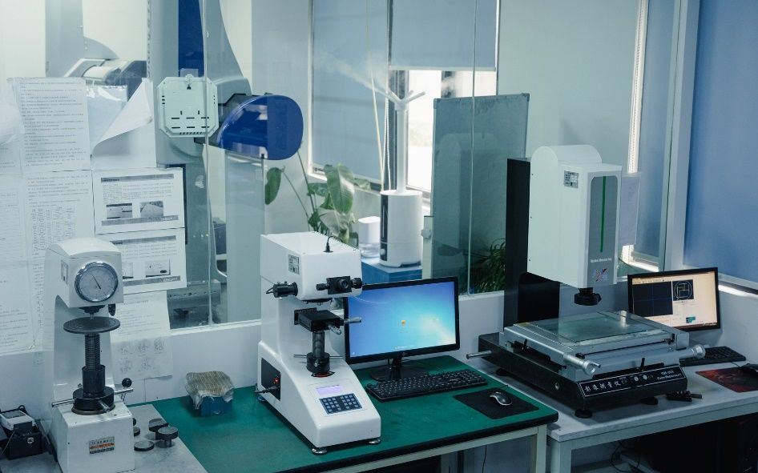
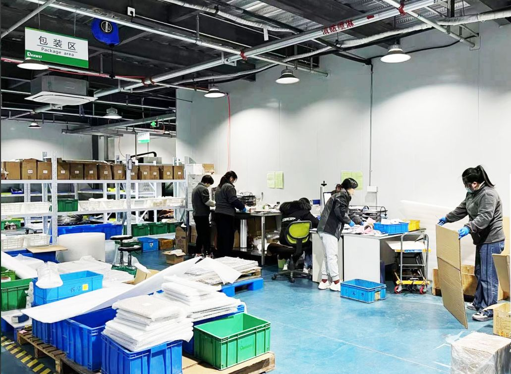
Des réalisations typiques de notre atelier. Nous fabriquons sur plan — ce sont des exemples, pas un catalogue.
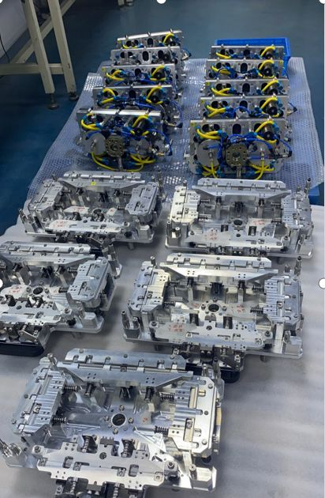
Palettes de ligne de production et montages de test pour l’assemblage d’écrans automobiles (LCD) — embases en aluminium usiné avec pions de centrage, brides à ressort et composants pneumatiques, fabriquées et assemblées en série.
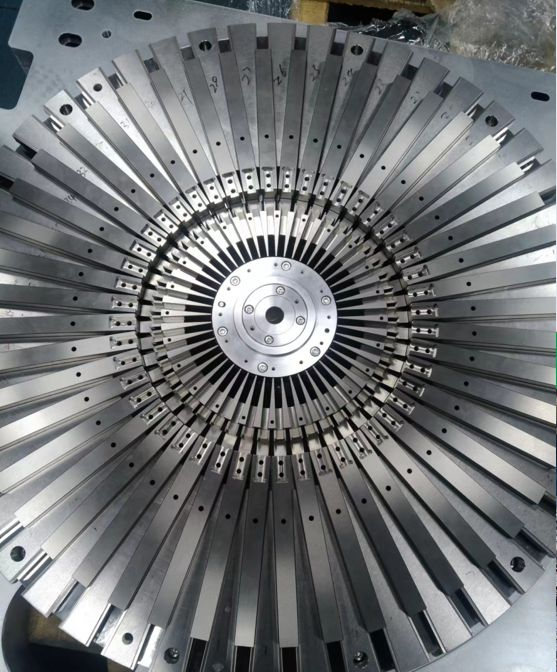
Outillage radial pour stators de moteurs de véhicules électriques à fil plat (hairpin) — des dizaines de lames rectifiées avec précision, tenues à des tolérances serrées de rainure et d’angle autour d’un moyeu usiné.
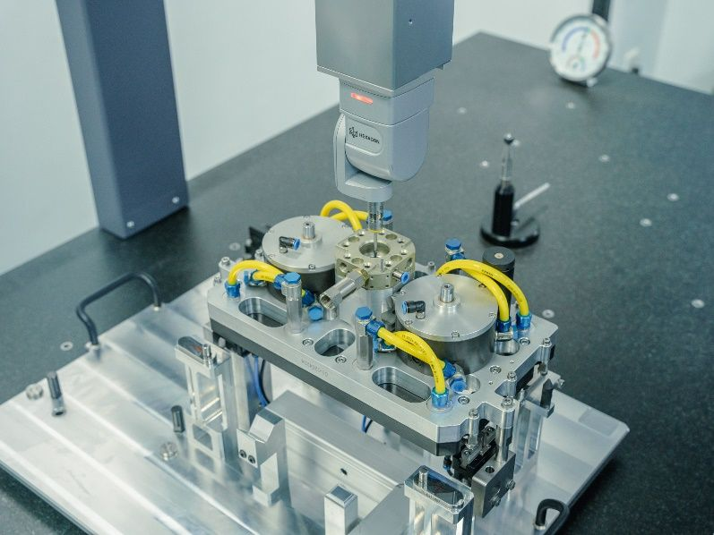
Plaques de montage avec vérins, brides pivotantes et circuits d’air intégrés, vérifiées sur MMT avant livraison pour s’intégrer directement à votre ligne.
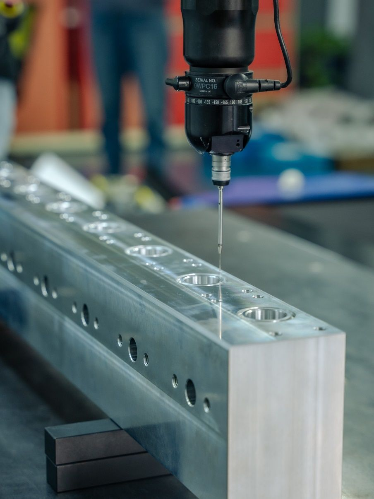
Plaques, rails et blocs de distribution en aluminium et en acier avec perçages et taraudages, mesurés cote par cote par rapport au plan.
Courses en mm. La précision correspond à la tolérance d’usinage réalisable.
| Équipement | Qté | Course (mm) | Précision (mm) | Marque | Remarque |
|---|---|---|---|---|---|
| Centre d’usinage CNC | 1 | 1600×800 | 0.01 | Marque chinoise | |
| Centre d’usinage CNC | 10 | 850×500 | 0.005 | Marque chinoise | dont 2 en 5 axes |
| Centre d’usinage CNC | 2 | 1321×457 | 0.005 | Haas (États-Unis) | |
| Centre d’usinage CNC | 3 | 762×406 | 0.005 | Haas (États-Unis) | VF-2SS + 4e axe |
| Centre d’usinage CNC | 1 | 762×406 | 0.005 | Okuma (Japon) | |
| Centre d’usinage à portique | 1 | 3000×1500 | 0.01 | Marque chinoise | |
| Centre d’usinage horizontal | 1 | 1500×1500 | 0.01 | Marque chinoise | |
| Fraiseuse à tourelle | 3 | 700×300 | 0.02 | Xinhujiang | |
| Tour conventionnel | 4 | Ø400×600 | 0.01 | Marque chinoise | |
| Tour CNC | 6 | Ø360×600 | 0.01 | Marque chinoise | |
| Rectifieuse plane de précision | 3 | 400×200 | 0.002 | Marque chinoise | |
| Rectifieuse plane grande capacité | 1 | 800×400 | 0.005 | Marque chinoise | |
| Électroérosion à fil – basse vitesse | 4 | 400×300 | 0.005 | Sodick (Japon) | |
| Électroérosion à fil – vitesse moyenne | 2 | 450×450 | 0.01 | Marque chinoise | |
| Électroérosion à fil – grande vitesse | 5 | 450×450 | 0.03 | Marque chinoise | |
| Perceuse par électroérosion | 2 | — | — | Marque chinoise | |
| Machine de marquage laser | 1 | — | — | Marque chinoise | |
| Machine de nettoyage par ultrasons | 2 | — | — | Marque chinoise |
Contrôles dimensionnels, de dureté, de revêtement et fonctionnels réalisés en interne — rapports de contrôle joints aux envois sur demande.
| Équipement | Qté | Étendue de mesure (mm) | Résolution (mm) | Marque | Usage |
|---|---|---|---|---|---|
| Machine de mesure tridimensionnelle (MMT) | 1 | 1000×800×600 | 0.001 | Hexagon | |
| Machine de mesure tridimensionnelle (MMT) | 1 | 1000×800×600 | 0.001 | AEH | |
| Colonne de mesure | 3 | 0–600 | 0.001 | TESA | |
| Machine de mesure optique 2,5D | 1 | 250×150 | 0.001 | Wanhao | |
| Comparateur de hauteur | 2 | 0–50 | 0.001 | Sanfeng | |
| Rugosimètre | 1 | Rugosité de surface | 0.0001 | Sanfeng | |
| Micromètre d’intérieur 3 touches | 1 | Alésage Ø6–63 | 0.001 | Marque chinoise | |
| Cales étalons | 2 | 103 pièces | 0.001 | ||
| Piges de contrôle | 1 | Sur mesure | 0.001 | 2 jeux | |
| Tampons lisses | 1 | Sur mesure | 0.001 | 2 000 pièces | |
| Duromètre Rockwell | 1 | ||||
| Duromètre Vickers | 1 | ||||
| Duromètre Shore | 1 | ||||
| Testeur de résistance de surface | 1 | Conductivité du matériau | |||
| Mesureur d’épaisseur de revêtement | 1 | 0.001 | Couche de traitement de surface | ||
| Mesureur d’épaisseur de revêtement | 1 | 0.01 | Couche de peinture poudre | ||
| Enceinte de brouillard salin | 1 | ||||
| Testeur d’étanchéité | 1 | ||||
| Colorimètre | 1 | Teinte de peinture poudre |
Nuances courantes que nous usinons. Autres matières sur demande.
Envoyez-le-nous avec la quantité et la date souhaitée — nous reviendrons vers vous avec un devis formel.
Demander un devis